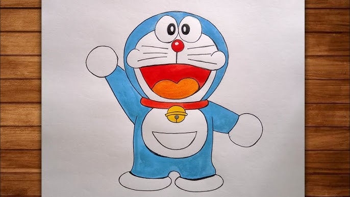
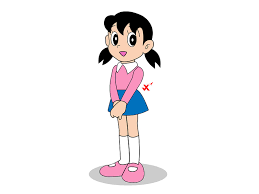

Doraemon – The Future Cat Robot
By Rajasri
Doraemon is a famous Japanese cartoon character loved by children all over the world. He is a robotic cat who comes from the 22nd century to help a boy named Nobita.
Origin of Doraemon
Doraemon was created by Fujiko F. Fujio. He travels back in time to improve Nobita's future and help him overcome his problems.

Friends of Doraemon
- Nobita
- Shizuka
- Gian
- Suneo
Nobita Nobi
Nobita is a lazy but kind-hearted boy. He is weak in studies and often gets
into trouble. Doraemon helps him using futuristic gadgets.
He depends on doremon gadgets to solve his problems.He deeply cares about his frnds and animals.
Through his mistakes his learns about the responsibly and self-confidence.
In future he will become an responsible one and marry Shizuka
Shizuka Minamoto
Shizuka is a sweet and intelligent girl. She is Nobita’s best friend and later becomes his wife. She always supports Nobita. Her presence balance the emotions of the others.She plays an role of shaping nobitha future and teaching viewrs the importance of kindness,discpline and empathy.

Gian
Gian is strong and aggressive. He loves singing but his voice is terrible. He often teases Nobita but has a good heart.
.png)
Suneo
Suneo is rich and proud. He shows off his toys and gadgets. He is clever but sometimes selfish.
.png)
Famous Gadgets
- Anywhere Door
- Bamboo Copter
- Time Machine
- Take-copter
Message of the Cartoon
Doraemon teaches important values like friendship, honesty, kindness, and using technology responsibly.
"The future depends on what you do today." – Doraemon
Conclusion
Doraemon is not just a cartoon, but a meaningful story that inspires children to be better human beings.